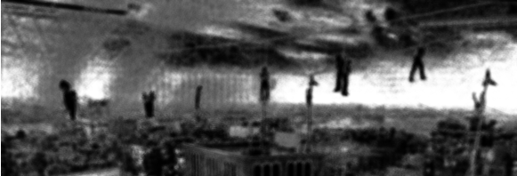

Police Investigate Vigilante Believed to Be "Spindle"
RED MESA, AZ — The Red Mesa Police Department is investigating a series of incidents involving an unidentified vigilante who has reportedly targeted individuals suspected of criminal activity throughout the Red Mesa area.
The individual, who has been referred to by witnesses as "Spindle," has been observed confronting suspected burglars, drug dealers, violent offenders, and other individuals with known or suspected criminal histories. In several incidents, suspects were found injured and restrained at the scene shortly before officers arrived.
Police say the individual has not been formally identified and has not been cooperative with attempts to establish contact.
"They have not committed themselves to any sort of conversation with us," Chief Daniel R. Mercer said Tuesday. "When officers arrive, they're generally already gone."
Witnesses have provided varying descriptions of the suspect. Most describe a young woman of relatively small stature wearing dark clothing and a distinctive mask or face covering. Several witnesses have also reported that she appears to move unusually quickly and is difficult to follow once she leaves the scene.
No verified photograph of the individual is currently available.
The department has received several reports of the vigilante intervening in crimes before officers arrive. In at least two cases, witnesses reported that the suspect appeared to know that police were approaching before patrol units reached the scene.
Police are asking residents not to approach or attempt to assist the individual.
"We understand that some people may view these incidents favorably, particularly when the person being confronted has a criminal record," Mercer said. "That does not give an individual the authority to act as law enforcement."
The name "Spindle," however, is not unfamiliar to the department.
According to department records, the name was previously associated with an individual involved in several criminal investigations in the Arizona area. That individual, Silas M. Crowe, is deceased.
When asked whether the department believed the person currently operating under the name was connected to the previous Spindle, Chief Mercer declined to speculate.
"We are aware of the similarities," Mercer said. "At this time, we have no reason to conclude that the two individuals are the same person."
The department has not confirmed whether the current suspect deliberately adopted the name in reference to the previous individual.
Attempts by local media to interview the vigilante have also been unsuccessful. Witnesses report that the individual has declined to answer questions and generally leaves the area before officers or reporters can speak with her.
Anyone with information regarding the identity of the individual is asked to contact the Red Mesa Police Department.

— END —